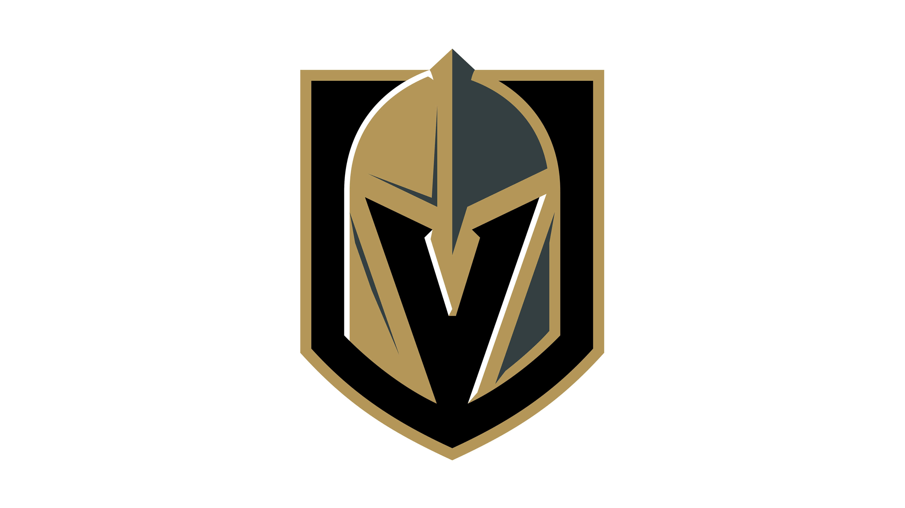

| Home NHL AWARD TYPES |
The Stanley cup

The Stanley Cup is awarded to the Champion of the of the Stanley Cup Playoffs at the end of each year to the last remaining team in the finals. It is the oldest existing trophy to be awarded to a professional sports league in North America. The Stanley Cup Finals is the NHL championship series is to declair the champion of the Stanley Cup. It is one of the most important championships available to hockey. The Stanley Cup is named after Lord Stanley of Preston who was the Governor General of Canada, who donated the Cup as an award to Canada's top-ranking amateur ice hockey club. I hockey history the Montreal Canadiens hold the title of most Stanley Cup wins with 24. |
Recent Winners
2018-2019 Season
2019-2020 Season

2022-2023 Season
Player Awards
Hart Memorial Trophy
Is yearly awarded to the Most Valuable Player in the National Hockey League.
Conn Smythe Trophy
The Conn Smythe Trophy is given to a player to the tea that has won the Stanley Cup. This trophy is picked by the Professional Hockey Association and is awarded yearly to the MVP of the Stanley Cup Playoffs.
Art Ross Trophy
The Art Ross Trophy is an yearly awarded to the NHL player who leads the league in total points (Goals and Assists) in the regular season.
Ted Lindsay Award
The Ted Lidsay award is yearly awarded to the National Hockey League's most outstanding player in the regular season and is picked by the members of the NHL Players Association.
James Norris Memorial Trophy
The James Norris trophy is yearly awarded to the National Hockey League's best defense player who shows their skills throughout the season while playing their position.
Vezina Trophy
The Vezina Trophy is yearly awarded to the National Hockey League's best goaltender who is the best at their position in the league. At the end of each season, the all 32 NHL managers (32 team managers from) vote to determine the winner.
Calder Memorial Trophy
The Calder awarded is yearly awarded to the NHL's Rookie of the Year. It is given to a player who is currently playing their first season in the NHL who stands out the most.